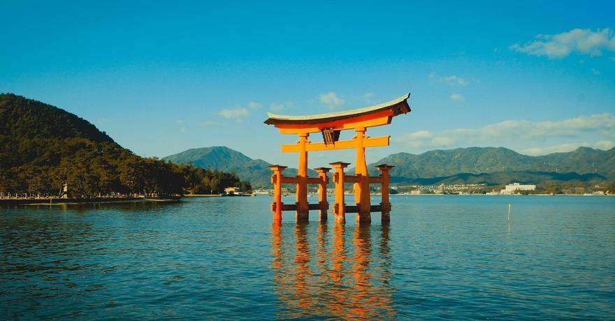
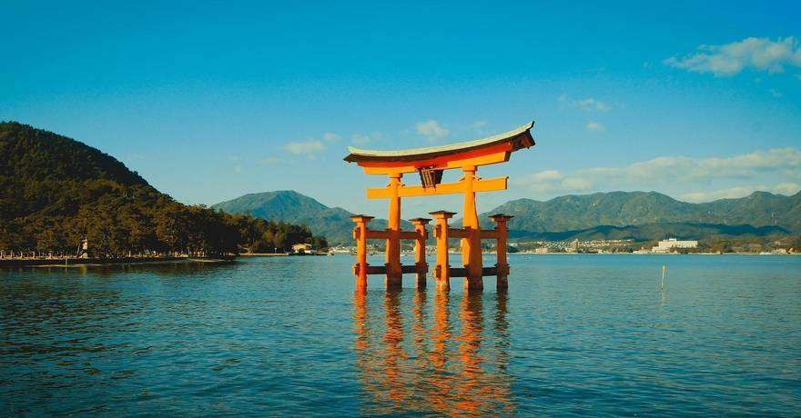

Description:
Itsukushima Shrine (厳島神社 (嚴島神社), Itsukushima-jinja) is a Shinto shrine on the island of Itsukushima (popularly known as Miyajima), best known for its "floating" torii gate. It is in the city of Hatsukaichi in Hiroshima Prefecture in Japan. The shrine complex is listed as a UNESCO World Heritage Site, and the Japanese government has designated several buildings and possessions as National Treasures. The Itsukushima shrine is one of Japan's most popular tourist attractions. It is most famous for its dramatic gate, or torii on the outskirts of the shrine, the sacred peaks of Mount Misen, extensive forests, and its ocean view. The shrine complex itself consists of two main buildings: the Honsha shrine and the Sessha Marodo-jinja, as well as 17 other different buildings and structures that help to distinguish it. The complex is also listed as a UNESCO World Heritage Site, and six of its buildings and possessions have been designated by the Japanese government as National Treasures.
Why to visit?:
Itsukushima Shrine is the main shrine of the island of Miyajima which is located right across from Hiroshima, Japan. It is an UNESCO Heritage Site and really important to the island. In fact, Miyajima is literally named “The Shrine’s Island”. Itsukushima shrine is an important Shinto landmark with a recorded history from 811 AD. It requires constant maintenance against sea water rotting and typhoons. As architecture goes, Itsukushima Shrine is also painted in the traditional Vermillion red that is seen across shrines and temples in Japan and built of wood. A unique aspect of Itsukushima is that it is built on marshland, which means that during high tide, the sea water surrounds it and the shrine floats over it. When I visited it, the tide was low enough to dry up the soil around the shrine, making it possible for visitors to visit the huge Torii that faces the shrine that is usually partially submerged by sea water. Sunset is probably the most beautiful time to watch the Torii gate and to commune with the deer that freely roam the island. Several times a year, important buddhist ceremonies take place at this shrine. The best times to visit Itsukushima shrine are sunrise and sunset. At sunrise, the shrine is empty and monks roam the shrine making offerings and performing their morning prayers. This makes the whole place quite serene. You might even meet a monk playing an instrument while charging the entrance fee. And at night the shrine is closed, but you can still see the Torii, which is illuminated.

 


Transport:
First way:
From Hiroshima Station, take the JR Sanyo Line to Miyajimaguchi Station (27 minutes). Then, take the
ferry from Miyajimaguchi to Miyajima Pier (10 minutes). Itsukushima Shrine is a short walk from Miyajima Pier (10 minutes).
Total travel time: approximately 50 minutes.
Second way:
From Hiroshima Airport, take the airport limousine bus to Hiroshima Station (45 minutes). From Hiroshima Station,
take the JR Sanyo Line to Miyajimaguchi Station (27 minutes). Then, take the ferry from Miyajimaguchi to Miyajima Pier (10 minutes).
Itsukushima Shrine is a short walk from Miyajima Pier (10 minutes). Total travel time: approximately 1 hour and 40 minutes.
Other places to visit:
- Mount Fuji
- Imperial Tokyo
- Hiroshima Peace Memorial Park
- Historic Kyoto
- Temple City: Historic Nara